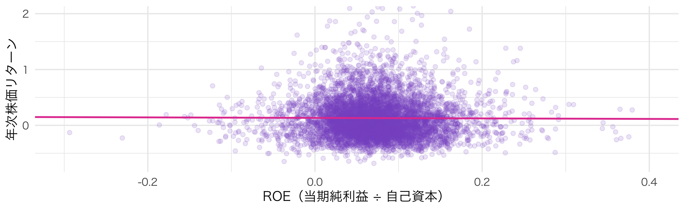
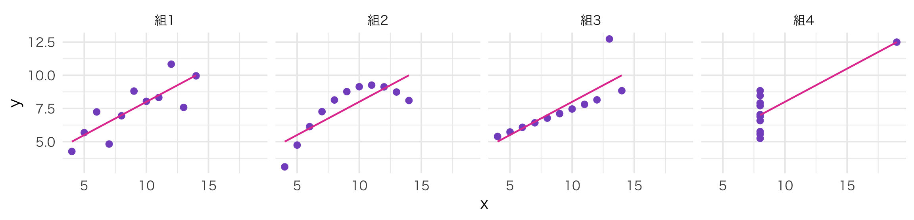
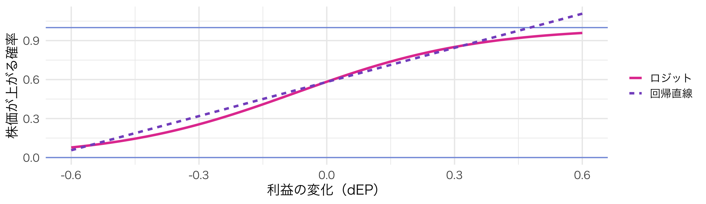
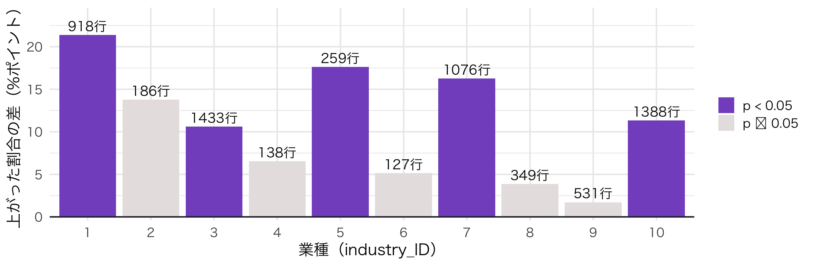

library(tidyverse)
fin <- read_csv("data/ch04_financial_data.csv") # 財務データ（年次）
stock <- read_csv("data/ch05_stock_data.csv") # 株価データ（月次）プレゼミ
Day5 : Rでのデータ分析（応用）
| 時間 | 誰が | 内容 |
|---|---|---|
| 00–05 | 教員 | 前回の振り返り（外れ値 → 比率と対数）／今日の問い |
| 05–10 | 学生 | 予想：ROEが高い会社ほど、株価は上がるか（4択・隣と2分） |
| 10–25 | 教員+学生 | 第1部 データの結合：月次の株価を年次にまとめ、財務データとつなぐ |
| 25–37 | 教員+学生 | 第2部 相関分析：予想の答え合わせ／ボール＝ブラウンの発見 |
| 37–50 | 教員+学生 | 第3部 単回帰 → 重回帰：「他の条件を一定にしたら」を数字で言う |
| 50–62 | 教員+学生 | 第4部 ロジットモデル：「上がる／上がらない」の確率を推定する |
| 62–80 | 学生 | ライブ分析：ペアごとに担当業種でロジットを回す |
| 80–87 | 学生 | 持ち寄り：10業種の結果を1枚の表に |
| 87–95 | 教員 | 今日の裏切り／まとめ／次回 |
今日のゴール（テキスト第5章「Rでのデータ分析（応用）」）
① 形の違う2つのデータを、行数を確かめながら正しく結合できる
② 相関係数・単回帰・重回帰の結果を、ことばで説明できる
③ 被説明変数が「はい／いいえ」のときにロジットモデルを使い、結果を確率に直して読める
今日の分析は、最初から比率と対数で組み立てます。
そしてもう1つ。単回帰は説明変数が1つしか入りません。 本当は、原因はたくさんあるはずです。
→ 今日は重回帰で、複数の原因を同時に入れます。
利益が増えた会社の株価は、上がるのか
会計情報は、投資家の役に立っているのでしょうか。
もし役に立っているなら、良い決算を出した会社の株価は上がるはずです。 この問いは、会計学の実証研究が最初に取り組んだ問いでもあります。
ROE（自己資本利益率）が高い会社ほど、その年の株価リターンは高いでしょうか。
ROEと株価リターンの相関係数は、どれくらいだと思いますか。
① 0.3 以上（はっきりした正の関係）
② 0.1 〜 0.3 くらい（弱い正の関係）
③ 0 〜 0.1 くらい（ほぼ関係なし）
④ マイナス（ROEが高いほど株価は下がる）
fin：財務データ（7,920行）| 列 | 意味 |
|---|---|
firm_ID, year |
企業番号・年度 |
X |
当期純利益 |
OA, FA |
営業資産・金融資産 |
OL, FO |
営業負債・金融負債 |
1社1年 ＝ 1行
stock：株価データ（95,040行）| 列 | 意味 |
|---|---|
firm_ID, year, month |
企業番号・年・月 |
stock_price |
月末の株価（円） |
DPS |
1株あたり配当（円） |
adjustment_coefficient |
株式分割の調整係数 |
shares_outstanding |
発行済株式数 |
1社1年 ＝ 12行
[1] 7920[1] 95040行数が 12倍 に増えました。1社1年の財務データが、12か月分コピーされたのです。
エラーも警告も出ません。 このまま回帰すると、同じ会社を12回数えた結果になります。
結合の前に、両方を「1社1年 ＝ 1行」にそろえる。 これが結合のいちばん大事な約束です。
r_{\text{月}} = \frac{\text{今月の株価} \times \text{調整係数} + \text{配当}}{\text{先月の株価}} - 1
lag() ＝ 1つ前の行の値（ここでは先月の株価）group_by() があるので、別の会社の株価を先月として使わない# A tibble: 0 × 3
# ℹ 3 variables: firm_ID <dbl>, year <dbl>, n <int>prod(1 + ret) - 1 ＝ 月次リターンを掛け算でつなぐ（複利）。足し算ではありません。
最後の検算コードの結果が0行なら、「1社1年 ＝ 1行」になっています。
[1] 7920[1] 7920relationship = "one-to-one" を書いておくと、さっきの12倍の事故が起きたとき、Rがエラーで止めてくれます。
| 関数 | 残る行 |
|---|---|
left_join(x, y) |
x の行は全部残る |
inner_join(x, y) |
両方にある行だけ |
full_join(x, y) |
どちらかにある行全部 |
df <- df |>
arrange(firm_ID, year) |>
group_by(firm_ID) |>
mutate(lag_MV = lag(MV), lag_X = lag(X), lag_BE = lag(OA + FA - OL - FO)) |> # 前年の値
ungroup() |>
mutate(
BE = OA + FA - OL - FO, # 自己資本 ＝ 資産 − 負債
ROE = X / BE, # 自己資本利益率
EP = X / lag_MV, # 利益の水準（期首の時価総額で割る）
dEP = (X - lag_X) / lag_MV, # 利益の変化（期首の時価総額で割る）
size = log(lag_MV), # 会社の規模（期首の時価総額の対数）
up = if_else(R > 0, 1, 0), # 株価が上がった ＝ 1
inc = if_else(X > lag_X, 1, 0) # 増益 ＝ 1
) |>
filter(n_month == 12, !is.na(dEP)) # 12か月そろい、前年がある行だけ
nrow(df)[1] 6405# A tibble: 1 × 7
行数 会社数 最初の年 最後の年 リターン平均 リターン中央値 上昇した割合
<int> <int> <dbl> <dbl> <dbl> <dbl> <dbl>
1 6405 1444 2016 2020 0.130 0.0733 0.588落ちた行は 1,515行。もとの会社数 1,515社とぴったり同じです。各社の最初の年（前年がない年）だけが落ちたのです。
会社数が 1,444社に減ったのは、1年分しかない 71社が丸ごと消えたから。説明のつく減り方なら安心です。
答えは ③ ほぼ 0 でした。

みんなが知っていることでは、株価は動きません。
株価を動かすのは「予想外の変化」です。
だとすると、見るべきは利益の水準ではなく、利益の変化ではないでしょうか。
R ROE EP dEP
R 1.000 -0.007 0.130 0.168
ROE -0.007 1.000 0.638 0.294
EP 0.130 0.638 1.000 0.386
dEP 0.168 0.294 0.386 1.000R と dEP（利益の変化）の相関は 0.17。弱いけれど、はっきりプラスです。
cor() にデータフレームを渡すと、すべての組み合わせの相関をまとめて出します（相関行列）。
Pearson's product-moment correlation
data: df$R and df$dEP
t = 13.603, df = 6403, p-value < 2.2e-16
alternative hypothesis: true correlation is not equal to 0
95 percent confidence interval:
0.1436864 0.1912932
sample estimates:
cor
0.1675875 p値（p-value）が 0.05 より小さいので、「本当は相関0なのに偶然こうなった」とは考えにくい、と判断します（第4回の p 値と同じ読み方）。
95 percent confidence interval は、本当の相関はだいたいこの範囲という目安です。

4組とも、相関係数は 0.82、回帰直線も同じです（統計学者アンスコム、1973年）。
相関係数を出したら、必ず散布図も見る。 組3・組4は、たった1点が数字を決めています。
相関係数が言えるのは、
「一緒に動いている」ということだけです。
どちらが原因かは、相関係数からは言えません。
第三の要因（景気など）を入れて確かめる道具が、次の重回帰です。
今では実証会計学の出発点と呼ばれる論文です。
最初に投稿した学術誌では不採択だった、という話が知られています。
当たり前に見える問いを、データで確かめることに価値があったのです。
傾き 1.18：期首時価総額の 1% にあたる分だけ利益が増えた会社は、株価リターンが平均で約 1.18%ポイント 高い。
p 値：dEP の行の Pr(>|t|) は 1.5e-41（ほぼ0）。0.05 よりずっと小さく、偶然とは考えにくい。
R^2 ＝ 0.028：株価リターンのばらつきのうち、利益の変化で説明できるのは 約3% だけ。
関係は確かにある。でも、株価の動きのほとんどは利益以外で決まっている。
R_i = \beta_0 + \beta_1 \, EP_i + \beta_2 \, dEP_i + \beta_3 \, size_i + u_i
書き方は単回帰と同じ。~ の右側に + で変数を足すだけです。
各係数は、「他の説明変数を一定にしたときの」その変数の効果を表します。
| (1) | (2) | (3) | (4) | |
|---|---|---|---|---|
| + p < 0.1, * p < 0.05, ** p < 0.01, *** p < 0.001 | ||||
| (Intercept) | 0.119*** | 0.076*** | 0.089*** | 0.484*** |
| (0.005) | (0.007) | (0.007) | (0.031) | |
| dEP | 1.182*** | 0.972*** | 0.990*** | |
| (0.087) | (0.094) | (0.093) | ||
| EP | 0.688*** | 0.407*** | 0.326*** | |
| (0.065) | (0.070) | (0.070) | ||
| size | -0.038*** | |||
| (0.003) | ||||
| Num.Obs. | 6405 | 6405 | 6405 | 6405 |
| R2 | 0.028 | 0.017 | 0.033 | 0.058 |
| モデル | EP の係数 |
|---|---|
| (2) EP だけ | 0.688 |
| (3) EP ＋ dEP | 0.407 |
なぜ変わったのか。
EP と dEP は相関しています（0.39）。
モデル (2) の EP は、dEP の効果まで背負っていたのです。dEP を入れると、その分が dEP に移ります。
単回帰の係数は、入れなかった変数の効果を混ぜてしまうことがあります。
重回帰は、それを「他を一定にして」切り分ける道具です。
→ 回帰分析（lm()）
→ ロジットモデル（glm()）
「倒産するか」「配当を出すか」「赤字になるか」「M&Aされるか」。
会計の実証研究には、はい／いいえで答える問いがたくさんあります。
# A tibble: 2 × 3
inc 件数 上がった割合
<dbl> <int> <dbl>
1 0 2481 0.513
2 1 3924 0.636減益の会社で株価が上がったのは 51.3%、増益の会社では 63.6%。
増益の会社のほうが、株価が上がる確率が 12.3%ポイント高い。
Estimate Std. Error z value Pr(>|z|)
(Intercept) 0.05241022 0.04016666 1.304819 1.919545e-01
inc 0.50600437 0.05209877 9.712406 2.669604e-22glm(..., family = binomial) がロジットモデル。lm() を glm() に替えて、family = binomial を足すだけです。
predict(..., type = "response") で確率に直すと、さっきの表と同じ数字が出てきます。
P(\text{上がる}) = \frac{1}{1 + e^{-(\beta_0 + \beta_1 X_1 + \beta_2 X_2 + \cdots)}}

ふつうの回帰直線（点線）は、端のほうで確率が 1 を超えてしまいます（反対側では 0 を下回ることもあります）。
ロジットは S字の曲線なので、どんな値を入れても確率は 0〜1 に収まります。
Estimate Std. Error z value Pr(>|z|)
(Intercept) 2.023 0.177 11.446 0
dEP 4.683 0.641 7.304 0
EP 1.421 0.406 3.501 0
size -0.174 0.016 -10.659 0 1 2 3
0.467 0.583 0.691 dEP の係数はプラス。増益が大きいほど、株価が上がる確率は高くなります。Pr(>|z|) の 0 は、四捨五入で 0 になるほど小さいという意味です。
確率に直すと、時価総額の10%分の減益（dEP = -0.1）で 46.7% → 変化なしで 58.3% → 10%分の増益（dEP = 0.1）で 69.1%。係数ではなく、確率で語る。
担当業種は、ペア番号と同じ industry_ID です（1〜10）。
glm(up ~ inc, ...) を回し、係数と p 値を読む予想してから回すこと。
全体では、増益の会社のほうが上がる確率が高かった。
あなたの業種でも、同じ結果になるでしょうか。
変えるのは 1行目の k だけです。早く終わったペアは、glm(up ~ dEP + EP + size, ...) にも挑戦してください。
悪い
2つのデータを結合して、ロジット分析して
→ データの形もキーも伝えていない。
12倍の事故を起こすコードが、そのまま返ってくることがある
良い
R の tidyverse を使っています。
finは1社1年1行、stockは1社1年12行（月次）です。キーはfirm_IDとyearです。 stock を年次に集計してから fin と結合し、結合前後の行数を表示するコードにしてください。 そのあとup（0/1）をincでロジット分析し、結果を確率に直して表示してください。
結合を頼むときは「何が1行か」を必ず書く。ロジットを頼むときは「結果を確率に直して」と足す。
| 業種 | 行数 | 増益で上がった割合 | 減益で上がった割合 | 差 | inc の係数 |
p 値 |
|---|---|---|---|---|---|---|
| 1 | ||||||
| 2 | ||||||
| ⋮ | ||||||
| 10 |
全部そろったら、2つ考えてください。
① 差がプラスの業種はいくつあるか。 ② p 値が 0.05 より小さい業種はいくつあるか。

差がプラスの業種は 10／10。でも p<0.05 は 5／10 だけ。
行数の少ない業種ほど、同じ向きでも「有意」になりにくい。 有意でない ≠ 関係がない、です。
簿価時価比率（BM） ＝ 自己資本 ÷ 時価総額。割安な株ほど大きい値になります。
R^2 が 0.058 から 0.195 へ。説明力が 約3.4倍になりました。
BM の係数は -0.237 で、星3つ。「割安な株ほどリターンが低い」という大発見でしょうか。
年末の時価総額 MV には、今年の株価リターンの結果がすでに入っています。
株価が上がった会社 → MV が大きい → BM が小さい。答えを説明変数に入れていたのです。
| (4) BMなし | (5) 期末のBM | (6) 期首のBM | |
|---|---|---|---|
| + p < 0.1, * p < 0.05, ** p < 0.01, *** p < 0.001 | |||
| (Intercept) | 0.484*** | 0.800*** | 0.357*** |
| (0.031) | (0.030) | (0.034) | |
| EP | 0.326*** | 1.494*** | -0.016 |
| (0.070) | (0.073) | (0.079) | |
| dEP | 0.990*** | 0.366*** | 1.122*** |
| (0.093) | (0.088) | (0.093) | |
| size | -0.038*** | -0.051*** | -0.031*** |
| (0.003) | (0.003) | (0.003) | |
| BM | -0.237*** | ||
| (0.007) | |||
| BM_beg | 0.074*** | ||
| (0.008) | |||
| Num.Obs. | 6405 | 6405 | 6405 |
| R2 | 0.058 | 0.195 | 0.070 |
コードは正しく動き、星は3つ付き、R²は上がった。
それでも、結論は正反対だった。
第4回の検算の型は「動いたコードが、正しいコードとは限らない」でした。
今日はその続きです ── 結合したデータの「いつの数字か」を確かめないと、回帰は嘘をつく。
行数の検算に加えて、もう1つの検算：その説明変数は、被説明変数（R）を使って計算されていないか。
| 道具 | 何をするか |
|---|---|
left_join(x, y, by = , relationship = ) |
キーで2つのデータをつなぐ。1対1でなければ止める |
group_by() ＋ mutate(lag()) |
会社ごとに「前の行（前年・先月）」の値を取る |
group_by() ＋ summarise() |
月次を年次にまとめる |
cor(), cor.test() |
相関係数とその検定 |
lm(y ~ x1 + x2) |
重回帰 |
modelsummary(list(...)) |
回帰結果を並べて比べる |
glm(y ~ x, family = binomial) |
ロジットモデル |
predict(..., type = "response") |
ロジットの結果を確率に直す |
| 内容 | 目安 | |
|---|---|---|
| A | テキスト第6章を読む ※ | 30分 |
| B | 予想シート ※ | 3分 |
| C | 今日のライブ分析の業種で、model6（期首の BM を入れた重回帰）を回し、結果を貼る |
20分 |
※ 第6回の内容に合わせて、授業前に差し替えます。manaba の案内を確認してください。
その場で
あとで
nrow() で、どこで行数が変わったかを1行ずつ確かめる結合や回帰がおかしいときの質問のコツ：
「結合前の行数」と「結合後の行数」を両方書く。 原因の半分は、ここでわかります。
Ritsumeikan University, Business Administration